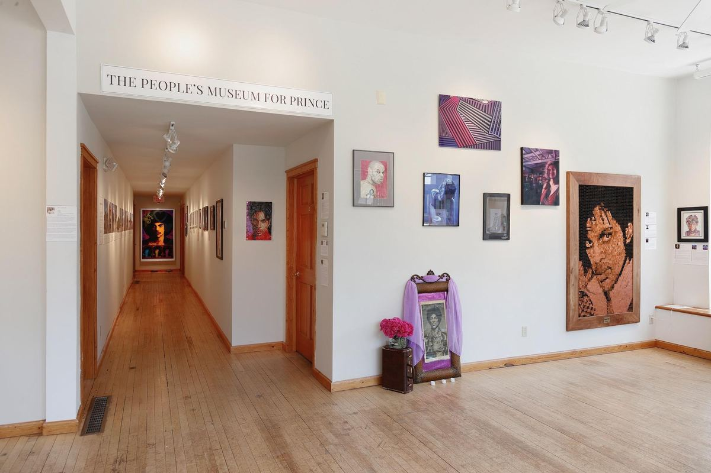
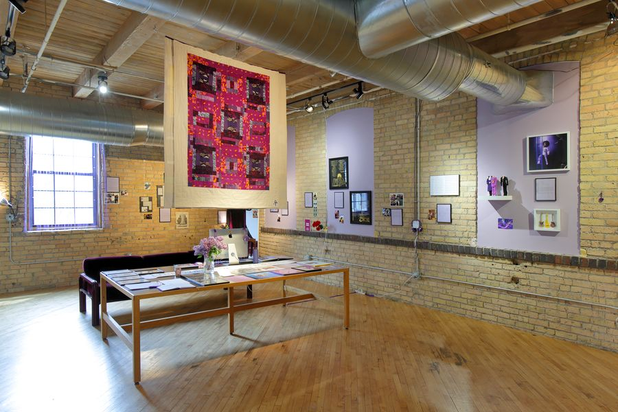

How the museum presents
The People’s Museum for Prince is a nomadic museum. Each edition opens for a season in one place, made with the people who live there and the people who travel to be part of it. Every edition’s participants join the museum’s collection, the Living Archive.


In the making. Join the mailing list to hear first.